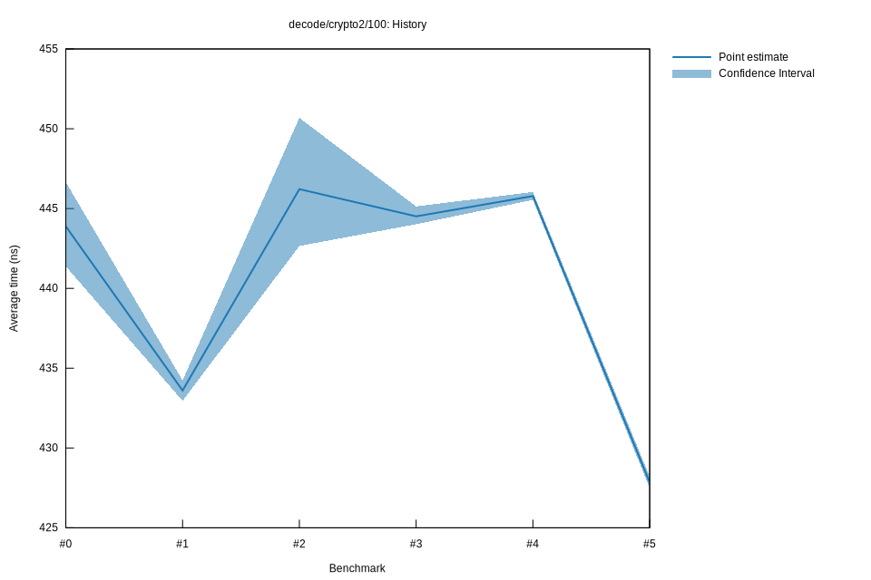

# 52022-10-16T20:20:06+03:00
|
Lower Bound |
Estimate |
Upper Bound |
| Value: |
427.49ns |
427.84ns |
428.20ns |
| Throughput: |
303.40MiB/s |
303.15MiB/s |
302.89MiB/s |
| Change in Value: |
-4.0338% |
-3.9091% |
-3.7831% |
| Change in Throughput: |
+4.2034% |
+4.0682% |
+3.9319% |
No change in performance detected.
# 42022-10-16T17:37:07+03:00
|
Lower Bound |
Estimate |
Upper Bound |
| Value: |
445.54ns |
445.79ns |
446.04ns |
| Throughput: |
291.10MiB/s |
290.95MiB/s |
290.78MiB/s |
| Change in Value: |
-1.2052% |
-0.3432% |
+0.1922% |
| Change in Throughput: |
+1.2199% |
+0.3444% |
-0.1918% |
Change within noise threshold.
# 32022-10-15T17:25:49+03:00
|
Lower Bound |
Estimate |
Upper Bound |
| Value: |
444.02ns |
444.51ns |
445.13ns |
| Throughput: |
292.10MiB/s |
291.78MiB/s |
291.37MiB/s |
| Change in Value: |
-1.4186% |
-0.3284% |
+0.8576% |
| Change in Throughput: |
+1.4390% |
+0.3295% |
-0.8503% |
Change within noise threshold.
# 22022-10-15T16:59:21+03:00
|
Lower Bound |
Estimate |
Upper Bound |
| Value: |
442.66ns |
446.22ns |
450.68ns |
| Throughput: |
293.00MiB/s |
290.67MiB/s |
287.78MiB/s |
| Change in Value: |
+2.5513% |
+3.4930% |
+4.4012% |
| Change in Throughput: |
-2.4878% |
-3.3751% |
-4.2156% |
No change in performance detected.
# 12022-10-08T17:34:51+03:00
|
Lower Bound |
Estimate |
Upper Bound |
| Value: |
432.95ns |
433.60ns |
434.23ns |
| Throughput: |
299.57MiB/s |
299.12MiB/s |
298.69MiB/s |
| Change in Value: |
-2.4073% |
-1.9262% |
-1.4623% |
| Change in Throughput: |
+2.4667% |
+1.9640% |
+1.4840% |
No change in performance detected.
# 02022-10-08T17:15:13+03:00
|
Lower Bound |
Estimate |
Upper Bound |
| Value: |
441.38ns |
443.88ns |
446.66ns |
| Throughput: |
293.85MiB/s |
292.19MiB/s |
290.38MiB/s |